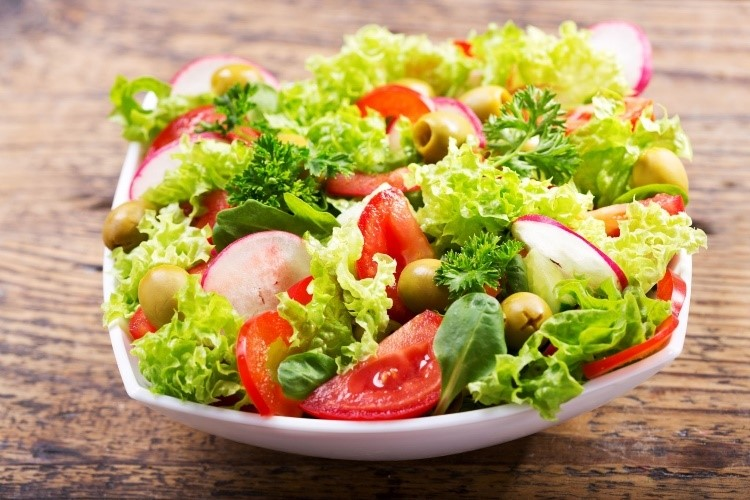
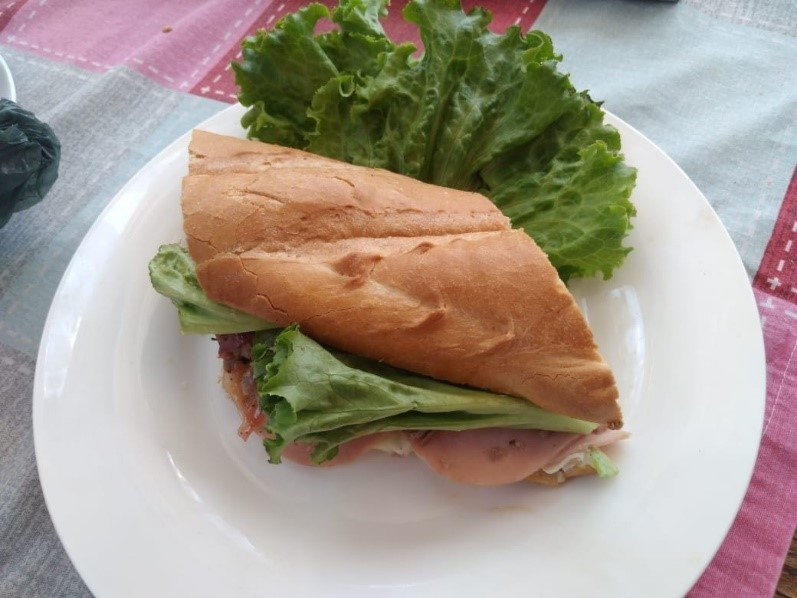
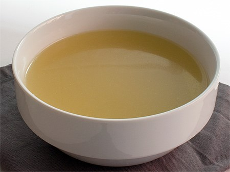
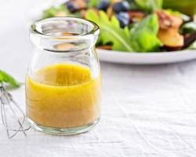
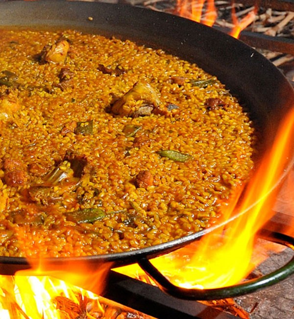
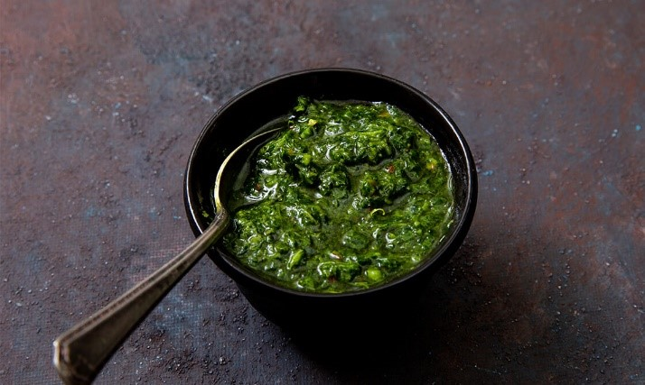
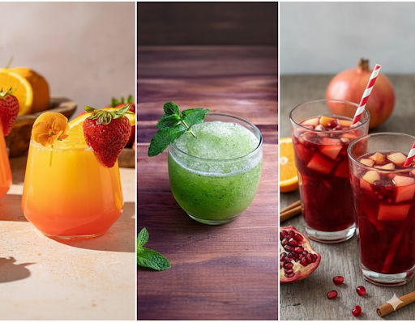

Ensalada Fresca 🥗
Ingredientes:
- 2 manzanas de gala
- ¼ de cebolla morada
- ½ taza de elotes amarillos
- 1 pepino
- ½ zanahoria
- 1 onza de maní
- 4 hojas de lechuga (palmito o romana)
- 2 limones
- 2 tazas de agua
- Aderezo italiano
Tips o recomendaciones:
- Personalízalo: Si no te gusta un ingrediente, siéntete libre de omitirlo o sustituirlo.
- Aderezo casero: Para un toque aún más personal, utiliza tu propio aderezo italiano hecho con aceite de oliva, vinagre balsámico, ajo, hierbas y miel para dulzor.
- Decoración: Coloca la ensalada en un plato bonito y adorna con hojas de menta fresca.
Ensalada de Frutas 🍓🥝

Ingredientes:
- 1 manzana de gala
- 2 kiwis
- 10 fresas
- 1 naranja
- 2 rodajas de piña
- 6 hojas de menta
- 1 limón
- Vinagreta dulce: El jugo de 2 naranjas, ½ de miel de abeja, 1 cucharada de vino blanco
Instrucciones:
- Preparación de la fruta: Lava, pela y corta todas las frutas en cubos o trozos. Lava las hojas de menta.
- Preparación de la vinagreta: En un recipiente, exprime el jugo de las naranjas, agrega la miel y el vino blanco. Mezcla bien.
- Ensamblaje de la ensalada: En un bowl grande, coloca las frutas cortadas y las hojas de menta picadas. Vierte la vinagreta y mezcla.
- Servir: Sirve de inmediato o refrigera por un par de minutos.
Consejos adicionales:
- Personaliza tu ensalada: Añade frutas de temporada como uvas, mango o melón.
- Cambia el nivel de dulzura: Si quieres más dulce, pon más miel. Para más ácido, añade más jugo de naranja o limón.
- Decoración: Puedes cubrir la ensalada con yogur natural, granola o semillas.
Emparedado de Baguette 🥖
Ingredientes:
- 3 rebanadas de baguette
- 3 hojas de lechuga romana o palmito
- ½ libra de lomo de res o angelina
- 4 lascas de queso mozzarella
- Pimienta y sal al gusto
- 4 lascas de jamón
- 1 cebolla morada (corte juliana)
- 1 cucharada de mantequilla
- ½ taza de jugo de naranja
- 2 cucharadas de azúcar
- Para el aderezo: ½ taza de mayonesa, ¼ de pepino, 1/4 de taza de mostaza, Romero deshidratado
Procedimiento:
- Prepara el aderezo: Licúa mayonesa, pepino, mostaza y romero. Reserva.
- Cocina la carne: Sofríe el lomo de res con mantequilla, sal y pimienta.
- Prepara la cebolla caramelizada: Sofríe la cebolla morada con mantequilla y azúcar. Añade jugo de naranja y cocina a fuego bajo hasta que caramelice.
- Arma el emparedado: Tuesta la baguette. Unta aderezo en una rebanada. Agrega lechuga, lomo, queso, jamón, cebolla y más aderezo. Cubre con otra rebanada.
Sugerencias adicionales:
- Cambios: Puedes probar con tomate, aguacate o huevo frito.
- Pan: Usa pan de molde o ciabatta si no tienes baguette.
- Carne: Reemplaza el lomo con pollo, pavo o tofu.
- Aderezo: El yogur griego natural es una buena alternativa a la mayonesa.
Ensalada César 🐔

Ingredientes para la ensalada:
- ½ lechuga romana (o palmito)
- 2 tomates
- 3 cucharadas de queso parmesano rallado
Para marinar el pollo:
- Pechuga de pollo deshuesada
- 1 ½ cucharada de paprika
- 2 ramitas de romero
- Sal y pimienta al gusto
- 1 dado de aceite de oliva
Procedimiento:
- Marinar y cocinar el pollo: Mezcla el pollo en cubos con paprika, romero, sal, pimienta y aceite. Cocina en una sartén.
- Armar la ensalada: En un bowl, combina la lechuga, los tomates y el queso parmesano. Añade el pollo desmenuzado.
Crotones e Ingredientes para el Aderezo:
- Medio pan baguette, aceite de oliva, mantequilla, ajo, sazón completa.
- Aderezo: Yema de huevo, anchoas (opcional), mostaza, queso parmesano, ajo, aceite de oliva, pimienta.
Procedimiento adicional:
- Prepara los crotones: Corta el pan en cubos, mezcla con aceite, mantequilla, sazón y ajo. Hornea.
- Prepara el aderezo: En un bowl, mezcla la yema, mostaza, ajo, limón, queso y anchoas. Bate mientras agregas el aceite de oliva.
- Montaje: Coloca una cama de lechuga, tomates cherrys, pollo, crotones y queso parmesano.
Fondos (Claro y Oscuro) 🥣
Fondo Claro:
Ingredientes: 1lb de menudos de pollo, ½ de chile verde, ½ de cebolla, ½ litro de agua, 1 hoja de laurel, hierbas aromáticas.
Procedimiento: Lavar los huesos, hervir, espumar, colar. Para clarificar, mezclar claras de huevo con carne molida y vegetales. Calentar con el caldo base y colar cuidadosamente.
Fondo Oscuro:
Ingredientes: 1lb de huesos de res, ½ de chile verde, ½ de cebolla, ½ litro de agua, 1 hoja de laurel, hierbas aromáticas.
Procedimiento: Tostar los huesos en el horno. Sofríe los vegetales en una olla. Desglasa la bandeja y agrega el líquido a la olla. Cocina los huesos y vegetales a fuego bajo por 4-6 horas. Cuela el fondo.
Vinagreta Clásica 🌿
Ingredientes:
- ¼ de taza de aceite de oliva
- ¼ de taza de vinagre (balsámico, de vino o de manzana)
- ½ cucharadita de sal
- ⅛ cucharadita de pimienta
- 1 cdita de mostaza Dijon
- 1 cdita de miel de abeja
- 1 diente de ajo finamente picado
- Opcional: orégano, romero, tomillo o albahaca
Procedimiento:
- En un tazón, mezcla todos los ingredientes húmedos y secos.
- Bate enérgicamente hasta emulsionar.
- Ajusta el sabor a tu gusto.
Salsa Bechamel y Derivada 🧀

Ingredientes Bechamel:
- 50 gramos de mantequilla
- 50 gramos de harina
- 600 ml de leche entera
- Pizca de nuez moscada, sal y pimienta
Procedimiento:
- En una olla, derrite la mantequilla y añade la harina para crear un roux.
- Retira del fuego y agrega la leche poco a poco, batiendo.
- Vuelve al fuego y cocina sin dejar de remover hasta que espese. Sazona.
Salsa Derivada (Puerros o Hongos):
Ingredientes: 2 tazas de fondo blanco, 2 puerros o ½ lata de hongos, 2 ajos, 2 cucharadas de mantequilla, 2 tazas de bechamel, sal, pimienta, 1 onza de vino blanco.
Procedimiento: Sofríe ajo, puerros/hongos en mantequilla. Añade vino, fondo blanco y bechamel. Cocina a fuego bajo hasta que se integre.
Salsa Tipo Italiana 🍝

Ingredientes:
- ½ taza de tomate o 15 tomates
- 3 tazas de fondo de res
- 1 cucharada de aceite
- ½ de carne molida
- 3 dientes de ajo
- ¼ de cebolla blanca
- ¼ de chile verde
- 1 cucharada de azúcar
- Albahaca, orégano, tomillo
- Sal y pimienta al gusto
- ¼ de taza de queso parmesano
Procedimiento:
- Sofríe cebolla, chile verde y ajo en aceite.
- Incorpora la carne molida y cocina hasta dorar.
- Añade tomate y fondo de res. Cocina a fuego lento por 20 minutos.
- Añade azúcar y hierbas. Sazona y mezcla con el queso parmesano.
Pasta Fresca con Salsa Alfredo 🍝

Ingredientes Pasta:
- 50 gramos de harina
- 5 huevos medianos
- Pizca de sal
- ½ cdita de aceite vegetal
Procedimiento:
- Forma un volcán con la harina. Agrega huevos, sal y aceite en el centro.
- Amasa por 10-15 minutos hasta que esté suave. Deja reposar por 30 minutos.
- Estira la masa y córtala en la forma deseada. Cocina en agua hirviendo por 2-3 minutos.
Ingredientes Salsa Alfredo:
- 4 onzas de tocino
- 1 pechuga de pollo
- 3 onzas de mozzarella
- 150 gramos de queso parmesano
- Aceite de oliva, vino blanco, perejil, pimiento rojo, ajo, pimentón amarillo.
Procedimiento:
- Fríe el tocino y el pollo en una sartén. Retira y reserva.
- Sofríe pimientos y ajo en la misma sartén.
- Añade vino blanco y deja que se evapore.
- Agrega mozzarella y queso parmesano. Remueve hasta que se espese.
- Incorpora perejil, tocino y mezcla con la pasta.
Arroz Cantonés 🥡

Ingredientes:
- Para el arroz: 2 tazas de arroz blanco, aceite vegetal, ajo, sal, agua.
- Para las proteínas: pechuga de pollo, nuca de cerdo, tocino, huevos.
- Vegetales: cebollines, ajo, cebolla blanca, salsa de soya, aceite de ajonjolí, mantequilla.
Procedimiento:
- Prepara el arroz: Lava el arroz, sofríelo con ajo y cocina según las instrucciones.
- Prepara las proteínas: Fríe el pollo, el cerdo y el tocino por separado. Haz una tortilla fina con los huevos.
- Arma el arroz: Sofríe los vegetales en un wok. Añade el arroz cocido, las proteínas y los huevos. Vierte la salsa de soya y el aceite de ajonjolí.
Paella a la Valenciana 🥘
Ingredientes:
- Proteínas: chorizos, lomo de cerdo, pollo, tocino.
- Arroz: 2 tazas de arroz precocido.
- Vegetales: guisantes, tomates, perejil, cebolla, alubias chinas, pimiento rojo, pimiento verde, limón.
- Especias: romero, tomillo, laurel, sal, pimienta, ajo, azafrán.
Procedimiento:
- Dora el tocino, el cerdo, el pollo y los chorizos. Retira y reserva.
- Sofríe los vegetales en la paellera. Agrega los tomates, hierbas y especias.
- Regresa las proteínas a la paellera. Añade guisantes, alubias y azafrán.
- Vierte el arroz y cubre con caldo. Cocina sin revolver hasta que el líquido se absorba.
- Deja reposar con los chorizos encima. Decora con perejil y limón.
Chimichurri 🌶️
Ingredientes:
- 6 dientes de ajo
- 1 taza de perejil picado
- ¼ de taza de aceite vegetal
- 1 taza de vinagre blanco o de vino
- 1 cucharada de mantequilla o aceite de oliva
- ½ pimiento rojo, ½ pimiento amarillo
- Romero, orégano, cebollines, sal, pimienta, cilantro.
- Papas cambray, pan baguette.
Procedimiento:
- Combina todos los ingredientes picados y las especias en un tazón.
- Añade el vinagre y los aceites. Sazona y deja reposar 30 minutos.
- Cocina las papas cambray hasta que estén tiernas. Saltea en mantequilla con ajo y eneldo.
- Corta y tuesta el pan baguette. Unta con mantequilla y ajo, y espolvorea con queso parmesano.
Recetas de Café ☕
Cappuccino
Ingredientes: 1 taza de expreso, 1 taza de leche, cacao, canela.
Procedimiento: Prepara el expreso. Calienta y espuma la leche. Vierte la leche cremada sobre el café. Espolvorea cacao o canela.
Café Bombón
Ingredientes: 2 tazas de café expreso, ½ taza de leche condensada.
Procedimiento: Vierte la leche condensada en una taza. Con cuidado, vierte el café expreso encima para crear dos capas. Sirve sin mezclar.
Café Expreso
Ingredientes: 2 tazas de café molido, 1 taza de agua.
Procedimiento: Muele el café finamente. Compacta en el porta filtro y extrae el café con una máquina de expreso. El resultado debe ser un líquido concentrado con crema.
Café Afogato
Ingredientes: 1 taza de café expreso o semi-expreso, 1 bola de helado de vainilla.
Procedimiento: Coloca el helado en una taza o vaso. Vierte el café caliente sobre el helado y sirve de inmediato.
Bebidas Refrescantes 🍹
Mimosa
Ingredientes: ½ taza de jugo de naranja, ¼ de taza de espumante (Sprite o Fiesta), 2 cucharadas de granadina o jarabe de cereza, hielo.
Procedimiento: En una copa, vierte el jugo de naranja y la granadina. Vierte el espumante con cuidado para crear capas. Agrega hielo y sirve.
Limonada con Pepino y Hierbabuena
Ingredientes: 1 taza de limonada, 4 rodajas de pepino, 3 rodajas de hierbabuena, azúcar, hielo.
Procedimiento: En un vaso, presiona suavemente el pepino y la hierbabuena. Agrega azúcar y hielo. Vierte la limonada y remueve.
Sangría
Ingredientes: ½ taza de jugo de naranja, ½ manzana, ⅓ taza de Sprite, ⅓ taza de jugo de uva.
Procedimiento: Mezcla la manzana, el jugo de naranja y el jugo de uva. Refrigera por 30 minutos. Justo antes de servir, añade el Sprite. Sirve con trozos de fruta.